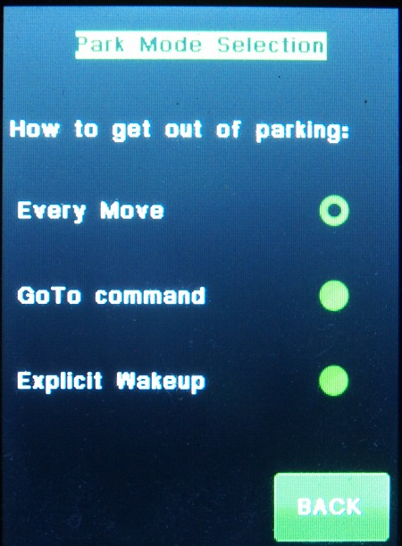

| Interactive Hand-Controller Menus - click on green button to Navigate |
|
 Park Modes Menu |
This screen configures one of three ways that Gemini-2 can exit the parked mode: Every Move or Mode 0 - Every command that moves the mount wakes the mount up (current state). This includes pressing the directional buttons, changing the tracking rate, using any of the Un-Park button. If a computer is connected to the controller, any command from it can also wake up the mount and it will start tracking in RA. I highly recommend using parking mode 2. It is less convenient, but a much safer parking mode. This is the default mode, and is the only mode in firmware before July 27, 2013 Goto Command or Mode 1 - HC directional buttons, classical HC and autoguider inputs are ignored, but GoTo commands and un-park commands wake it up. Explicit Wakeup or Mode 2 - Only an Un-Park command :hW# will wake the mount up. This mode is there to provide compatibility with the ASCOM standard rules. The Un-Park buttons in the hand controller, Web interface, and the Un-Park command in the ASCOM driver send this string to the mount. The ASCOM driver now has a check box under Configuring Park, that will select this mode of Operation. Please note that parking or un-parking does not change from one mode to the other. Only the Un-Park command in the ASCOM driver and HC will start tracking again. |